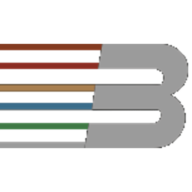

Experiência
Minha trajetória profissional
Desenvolvedor Full Stack
Tempo integral
São Paulo, SP · Remoto
- Desenvolvimento de sistemas para empresas de telecomunicações e RH
- Construção de APIs REST com Node.js para backend de sistema telecom
- Desenvolvimento de interfaces web responsivas com React
- Implementação de backend em Python integrado a apps Flutter
- Clean Code, versionamento Git e metodologias ágeis (Scrum/Kanban)
Habilidades desenvolvidas:

Desenvolvedor Mobile
Tempo integral
Blumenau, SC · Presencial
- Responsável técnico pelo app POS para maquininhas em postos de combustível
- Definição de arquitetura MVVM e padronização do projeto
- Integração TEF para processamento eletrônico de pagamentos
- Interoperabilidade Flutter ↔ Android nativo (Kotlin) com APIs REST
- Configuração de ambientes com Flavors e gerenciamento de estado com Provider
Habilidades desenvolvidas:

Desenvolvedor Mobile
Tempo integral
Blumenau, SC · Remoto
- Desenvolvimento e manutenção de apps de transporte urbano
- Ecossistema com mais de 70 aplicativos gerenciados via Flavors
- Monitoramento em tempo real, correção de bugs e evolução contínua
- Criação e manutenção de testes unitários para qualidade do código
- Colaboração com designers e validação antes de publicação na Play Store